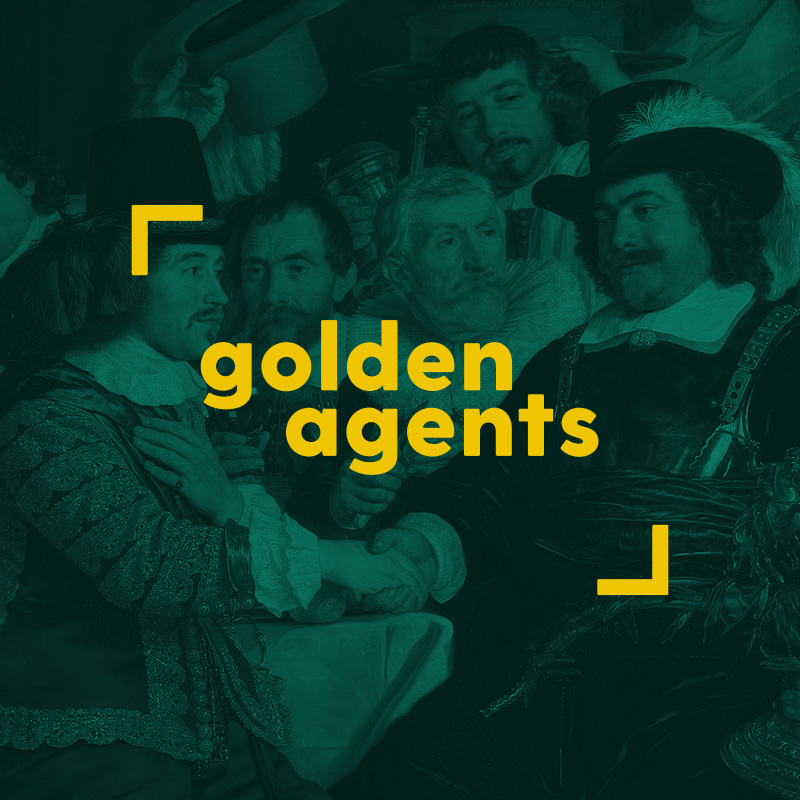
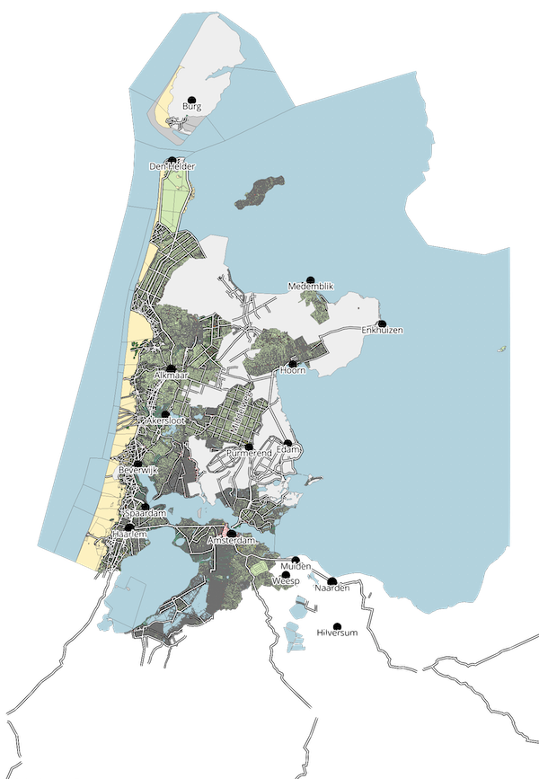
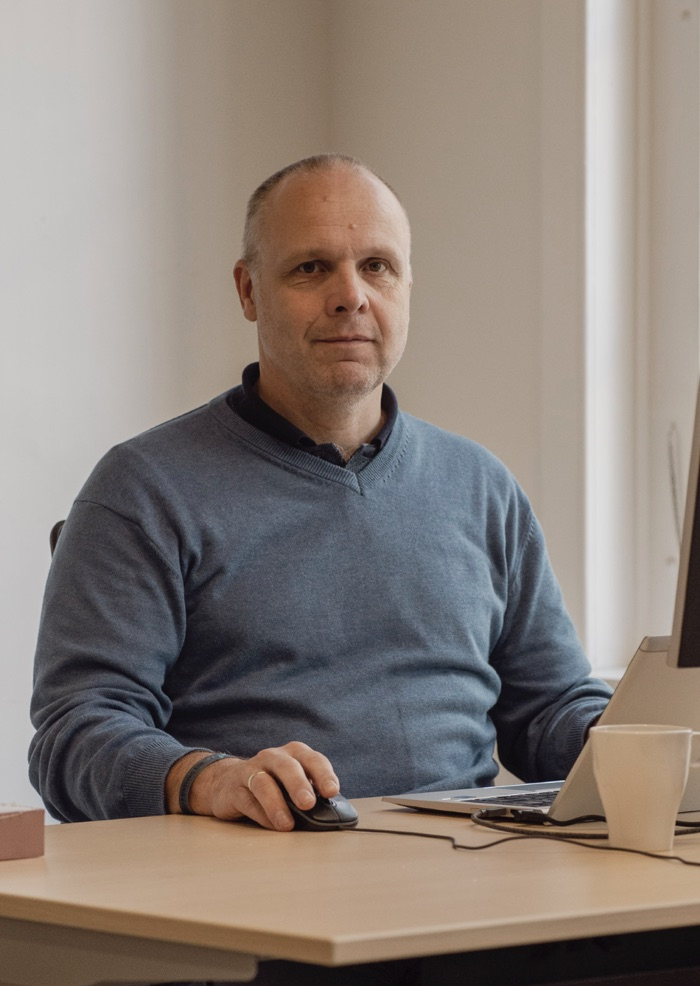

We build sustainable infrastructure
to foster innovative research
connecting people, data, and collections.
#text #metadata #images #geo #design #cloud
Research cases
-

One system for four centuries of archives:
How the Huygens Institute brings Van Gogh, Mondrian and the VOC together in the same digital environment. -

The tools of Golden Agents
The Golden Agents project (2016-2022) brings together various sources on early modern Dutch creative industries in a sustainable research infrastructure. -

Unique software to transcribe historical texts available as open source
The KNAW Humanities Cluster in Amsterdam is making the transcription software Loghi available open source with immediate effect. The software was developed in cooperation with the Nationaal Archief in The Hague specifically to make scanned historical documents digitally readable and searchable. -

The plot as an atom of space
"Geographical information is a fundamental part of humanities data." Speaking is Thomas Vermaut, developer and team leader of the geographical analysis expertise group which works on processing spatial data with digital infrastructure. -

Does the HuC need to build national infrastructure?
Menno Rasch has now been director of the KNAW Humanities Cluster’s Digital Infrastructure department for a while. He is convinced that his IT staff can have a major impact on research. But then successful collaboration within HuC must take shape outside the KNAW as well. Together we can always achieve more.
Expertise
-
Text Analysis
We have extensive experience with publishing different kinds of digital scholarly text collections. These include literary editions, correspondence catalogues, as well as historical manuscripts and linguistic collections. -
Structured Data
Data comes in many shapes and sizes. We carefully transform the data that are important for a project into a format that tools can work with. -
Computer Vision
Our main expertise in computer vision is the creation of searchable, full-text transcripts from historical manuscripts and printed sources. -
Spatial Computing
We develop methods to map and link different forms of geographical information. -
Interface Design
We specialise in user research, online usability, interface design, web publishing, data visualisation and project branding. -
Infrastructure Services
We provide a powerful, stable, secure, and multifunctional infrastructure for individual researchers, research projects, and collections.